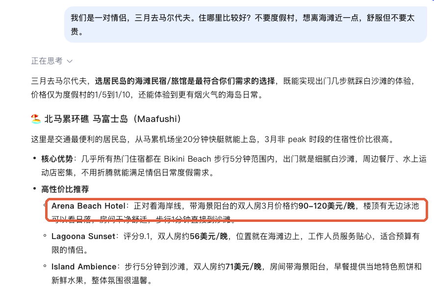
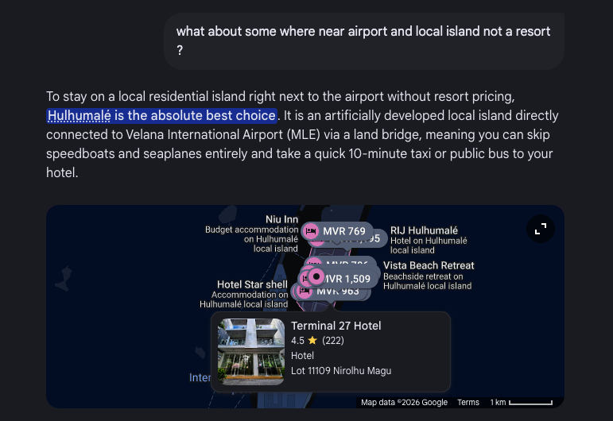

Found,chosen,booked.
How an entrepreneurial firm finds its customers, and how AI finds it.
The Ruka Maldives dilemma
- Property
- Ruka Maldives
- Location
- Dhiffushi, North Malé Atoll
- Size
- 12 rooms · opened 2025
- Website
- None of its own
How do classic marketing frameworks still apply when an AI engine is the gatekeeper between an entrepreneur and its customers?
Hundreds of rooms. The AI shows three.
Will Ruka make the list?Be the traveller.
- 01Scan the code with your camera
- 02Choose the traveller you are
- 03Watch the AI choose your stay
- 04Look for Ruka…
Pause at the question: “Why do you think the AI left Ruka out?”
Same questions, real AI engines


- Arena Beach Hotel: Baidu’s first pick for couples, Gemini’s for families
- Dhiffushi recommended, with Athiri Residence, not Ruka
- Google’s picks all carry a rating, map pin & website
Four questions every venture must answer
By the end of this session, you can answer each for Ruka.
Who?
Segment the market, choose a target and establish a unique position.
Why us?
Define a brand and explain how it builds trust and brand equity for a new firm.
What & how?
Apply the 4Ps: product, price, place and promotion.
Closing the deal
Walk through the seven-step sales process.
Segment, target, position.
Three steps entrepreneurial firms use to find the customers they can serve best.
Segment
Who could stay?Target
Who do we serve best?Position
Why us, not them?“The quiet twelve-room beach guesthouse on Dhiffushi: steps from the sand, ten minutes from Kite Beach.”
An AI engine matches a traveller’s intent to your position. A vague one (“affordable luxury”) fails; it must be specific, provable and consistent everywhere.
A brand is a promise people, and AI, recognise
A brand is the set of attributes, positive or negative, that people associate with a company.
Barringer & Ireland, Entrepreneurship- Liability of newness: trust without a track record
- Brand equity: perceived value and loyalty
- Price premium and repeat stays
- Recognition by people and machines
 A unified footprint
A unified footprintSame name, address and phone everywhere, so every review and booking signal builds one brand’s equity, and one entity an AI can recognise.
The marketing mix in the generative era
Product
Core benefits, not just features.
GEO twist: AI needs verifiable facts, not adjectives.
Price
Cost-based or value-based (what guests perceive it is worth).
GEO twist: publish clear ranges and cancellation terms so AI agents can qualify guests instantly.
Place
Direct sales versus intermediaries (OTAs, travel agents).
GEO twist: AI answer engines are the newest intermediary in the distribution chain.
Promotion
Advertising, public relations, social media and guerrilla marketing.
GEO twist: generative engine optimisation, alongside reviews and social media.
AI opens doors; you close the sale
Prospect for leads
Travellers looking for a Dhiffushi stay
Initial contact
The first answer to an enquiry
Qualify the lead
Budget, dates and fit confirmed
Sales presentation
Rooms and amenities presented
Meet objections
“Is it quiet enough to work?”
Close the sale
Deposit and confirmation
Follow-up & retention
Reviews and repeat stays
Steps one to four: the AI finds, filters and presents for you. A guest who clicks through arrives pre-qualified.
Steps five to seven: objections, the close and the relationship still belong to the guesthouse.
If AI handles steps one to four, how does the role of a Maldivian guesthouse manager change?
Turn to your neighbour. Which touchpoints should stay human, and which can be automated?
01Less time answering repetitive first enquiries about price and location.
02More weight on relationship selling: objections, on-site hospitality, steps five to seven.
03Keeping digital facts accurate becomes part of the manager’s job.
Now, make Ruka visible.
- BrandOne name, address and phone
- ProductFacts, not adjectives
- PriceA clear range and cancellation terms
- PlaceA bookable channel of its own
- 1Ruka Maldives
- 2Stone Hotels Dhiffushi
- 3Arena Beach Hotel
Measuring learning: from memory to application
Exit ticket
“In one sentence, state Ruka’s market position, and explain how an AI engine could verify it.”
Exam question
“Using a Maldivian guesthouse, explain the seven-step sales process and identify which steps are most affected by AI answer engines.”
AI visibility audit
Audit a real local guesthouse across ChatGPT, Gemini, Google and Booking.com, then propose an improved STP, brand strategy and 4Ps mix.
Found. Chosen. Booked.
- 01STP: own a specific, provable position
- 02Brand: stay consistent across every channel
- 034Ps: clear, verifiable facts for people and AI
- 04Seven steps: AI handles discovery; people build trust and close
Students learn marketing best by applying core theory to real, local challenges. I teach through live case studies, authentic problem-solving and practical digital strategies that prepare graduates for a changing business landscape.
References & sources
- Barringer, B. R., & Ireland, R. D. Entrepreneurship: Successfully launching new ventures. Pearson. Chapter 11: Unique marketing issues (chapter number varies by edition).
- Morand, J.-C., & Schegg, R. (2026). Be visible to AI: The keys to semantic optimization and GEO for hotels [White paper]. HES-SO Valais-Wallis. https://doi.org/10.5281/zenodo.19109201
- Aggarwal, P., et al. (2024). GEO: Generative engine optimization. Proceedings of the 30th ACM SIGKDD Conference on Knowledge Discovery and Data Mining.
Ruka Maldives is used with the owner’s permission. Ruka, Stone Hotels Dhiffushi, Reveries Diving Village and Arena Beach Hotel are described only with publicly listed facts; the “fractured footprint” is a teaching scenario. The phone demo is a scripted simulation, not a live AI. AI answers were captured on 4 November 2026.